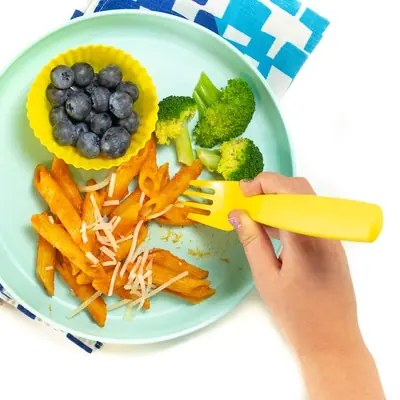

Kid-Requested Easy Hidden Veggie Pasta Sauce

Ingredients
- 1 tbsp olive oil
- 1/2 medium onion, (roughly chopped)
- 2 cloves garlic, (minced)
- 1/3 cup zucchini, (roughly chopped)
- 1/3 cup carrot, (roughly chopped)
- 1/4 cup leek, (approximately 1/2 cup, roughly chopped)
- 1/4 cup red bell pepper, (cored and roughly chopped)
- 1 28 oz can crushed tomatoes
- 1-2 cups of water, veggie or chicken stock
- 1 tbsp tomato puree
- 2 tsp Italian herb mix
- 2 tbsp butter (optional)
- 1-2 tbsp sugar or maple syrup (optional)
- 1 tsp balsamic vinegar (optional)
- salt and pepper to taste
Steps
- Heat a large stockpot over medium heat, add in the olive oil. Stir in the onion and cook for 3 minutes or until translucent. Add in the garlic, stir, and cook for an additional minute.
- Add in the zucchini, carrots, leek and peppers and cook for 5-7 minutes, occasionally stirring.
- Add in the crushed tomatoes, tomato puree, Italian herbs, balsamic vinegar, salt and pepper and butter if you are using. Adjust heat to medium-high and bring to a boil. Once you reach a boil, bring down the heat to low, cover and simmer for 15-30 minutes.
- Using a handheld immersion blender puree the soup. Or working in batches, transfer the sauce into a blender and puree on high until you achieve your desired consistency. If your sauce is too thick, add in water or stock in 1/2 cup increments. I used 2 cups of chicken stock in my sauce. Taste: depending on how many veggies you use (the more veggies the more intense veggie flavor), you may need to add in additonal olive oil, salt or sugar depending on the taste of your sauce.
Recipe by Baby Foode, from Baby Foode. Saved here for personal use; the original has the full notes, tips and photos. Open original